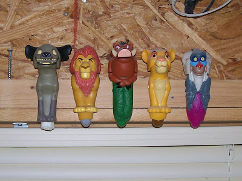
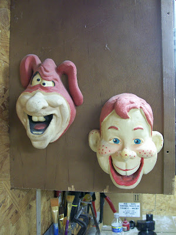

Shop talk
7/16/2009
{kind=link}

{kind=link}

These puppets were hanging (literally) around Kevin's shop. The finger puppets over the window (above) were prizes in the children's meals of a fast food restaurant. (I don't know which restaurant or the year.) Press the plunger under the feet upward and the mouth opens as the head lifts.
The molded foam rubber puppet heads (right) are operated by inserting the fingers and thumb into holes on the back side of the puppet. (Again,I don't know the story behind the puppets. If you know any of these puppet's history, I'll print it here, and pass it on to Kevin.)
* * * * *
From Philip Defibaugh:
Dear Clinton, I know a thing or two about those two heads that are featured on the wall. Both the Howdy Doody Head and that of the Domino's Pizza Mascot the "NOID" were made by Sutton's Happening back in the late 80's. They were sold at various toy stores that retailed for 8 to 10 bucks. They came in a small cardboard box called the "fingertronic puppet theater". I had the Howdy Doody and the California Raisons puppets. Other puppets released included: Mac Tonight (McDonalds), Archie, Spitting Image (UK Show similar to Sid and Marty Krofft's D.C. Follies), and Max Headrom. The puppets could be taken out of their package. The Howdy Doody puppet actually had the character standing in front of the lyric sheet to it's "Howdy Doody Time". The Howdy Doody box also featured artwork of the various puppets from the program.
Dear Clinton, I know a thing or two about those two heads that are featured on the wall. Both the Howdy Doody Head and that of the Domino's Pizza Mascot the "NOID" were made by Sutton's Happening back in the late 80's. They were sold at various toy stores that retailed for 8 to 10 bucks. They came in a small cardboard box called the "fingertronic puppet theater". I had the Howdy Doody and the California Raisons puppets. Other puppets released included: Mac Tonight (McDonalds), Archie, Spitting Image (UK Show similar to Sid and Marty Krofft's D.C. Follies), and Max Headrom. The puppets could be taken out of their package. The Howdy Doody puppet actually had the character standing in front of the lyric sheet to it's "Howdy Doody Time". The Howdy Doody box also featured artwork of the various puppets from the program.